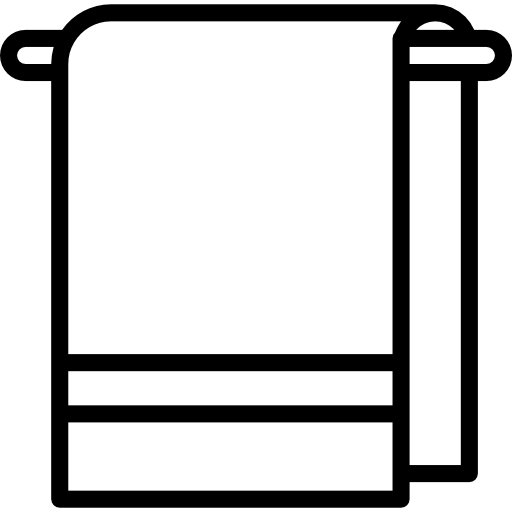

Alojamientos


Departamento "Bella Vista"
Equipado para 2 personas, con vista al lago y a las montañas. Es en monoambiente el cual dispone de cocina,
comedor, baño y una cama de 2 plazas.
La cocina esta equipada con todo lo necesario para su estadia, microondas, tostadora, heladera y pava electrica.
Tambien tiene vajilla completa.
Cuenta con un TV de pantalla plana con canales via satelite.
Su ubicacion es muy buena. A pocos metros se encuentra ubicado el Casino, hay lugares cercanos donde puede
realizar sus compras.
Esta ubicado a 900 metros del Parque Nacional de Nahuel Huapi. El aeropuerto mas cercano es el de San Carlos de
Bariloche, situado a 13Km de nuestro alojamiento.
Servicios:
 Ropa Blanca (Sabanas/Toallones).


Departamento "Bosque Encantado"
Equipado para 5 personas (con posibilidad de hasta 6), con vista a las montañas. Es un departamento el cual se
accede mediante una escalera, dispone de cocina totalmente equipada, comedor, baño, 2 habitaciones y sala de
estar.
La cocina esta equipada con todo lo necesario para su estadia, microondas, tostadora, pava electrica, cafetera y
heladera. Tambien contamos con juego de vajilla completa para 6 personas.
La sala de estar cuenta con chimenea, TV de pantalla plana con señal satelital, un sofa cama que se puede usar
como tal, para que duerma una persona mas y un balcon para disfrutar de la vista.
Dispone de 2 habitaciones, ubicadas en la planta alta. La primera es una con cama de 2 plazas y calefactor. La
otra habitacion cuenta con 3 camas individuales de 1 plaza y calefactor.
El baño esta ubicado en la parte inferior del departamento, cuenta con tina de baño y bidet, entre otras cosas.
Bosque Encantado es ideal para descansar y disfrutar de la naturaleza, se encuentra a 20Km del Circuito Chico, a
11Km del centro civico y a 21Km del Parque Nahuelito. El aeropuerto mas cercano es el de San Carlos de Bariloche,
ubicado a 33Km.
Servicios:
Ropa Blanca (Sabanas/Toallones).
Caja de seguridad.


Departamento "Bosque Encantado 2"
Equipado para 6 personas (con posibilidad de hasta 10), con vista a las montañas. Es un departamento el cual
tiene 2 plantas. Dispone de cocina totalmente equipada, living, comedor, baño, 3 habitaciones y sala de estar.
La cocina está equipada con todo lo necesario para su estadía, microondas, tostadora, pava eléctrica, cafetera y
heladera. También contamos con juego de vajilla completa.
La sala de estar cuenta con chimenea, TV de pantalla plana con señal satelital, 2 sofá que se puede usar cama,
para que duerman dos personas más (deben traerse frazadas en caso de utilizar los sofás). El living también
cuenta con TV de pantalla plana con señal satelital, otros 2 sofá que también se pueden utilizar como camas
(deben traerse frazadas si utilizan los sofás) y chimenea.
Dispone de 3 habitaciones, ubicadas en la planta alta. La primer habitación es una con cama de 2 plazas,
calefactor y placard. La segunda habitación cuenta con 2 camas individuales de 1 plaza y calefactor. La tercer
habitación es de una cama cucheta, con calefactor.
El baño está ubicado en la parte inferior del departamento, cuenta con tina de baño y bidet, entre otras cosas.
Dispone de un patio trasero, muy amplio, con parrilla y una mesa de madera para disfrutar al aire libre.
Bosque Encantado 2 es ideal para descansar y disfrutar de la naturaleza, se encuentra en el mismo sitio que
nuestro otro Departamento "Bosque Encantado". Ubicado a 20Km del Circuito Chico, a 11Km del centro civico y a
21Km del Parque Nahuelito. El aeropuerto más cercano es el de San Carlos de Bariloche, ubicado a 33Km.
Servicios:
Ropa Blanca (Sabanas/Toallones).
Caja de seguridad.


Departamento "Punto Bariloche"
Equipado para 5 personas. Es un departamento el cual tiene 2 plantas. Dispone de cocina totalmente equipada, living, comedor, baño, y 2 habitaciones.
La cocina es muy amplia y está equipada con todo lo necesario para su estadía, microondas, tostadora, pava eléctrica, cafetera y heladera. También contamos con juego de vajilla completa.
Dispone de 2 habitaciones. La primer habitación es una con cama de 2 plazas, calefactor y placard. La segunda habitación cuenta con 2 camas individuales de 1 plaza y calefactor.
El baño está ubicado en la parte superior del departamento, cuenta bidet, entre otras cosas.
Dispone de patio amplio, con parrilla y un lugar para estacionar.
"Punto Bariloche" es ideal para descansar y disfrutar de la naturaleza, se encuentra Ubicado a 23Km del Circuito Chico, a 10Km del centro civico y a
20Km del Parque Nahuelito. El aeropuerto más cercano es el de San Carlos de Bariloche, ubicado a 30Km.
Servicios:
Ropa Blanca (Sabanas/Toallones).


Departamento "La escondida"
Equipado para 5 personas. Es un departamento el cual tiene 2 plantas. Dispone de cocina totalmente equipada, living, comedor, baño, y 2 habitaciones.
La cocina está equipada con todo lo necesario para su estadía, microondas, tostadora, pava eléctrica, cafetera y heladera. También contamos con juego de vajilla completa.
Dispone de 2 habitaciones. La primer habitación es una con cama de 2 plazas, calefactor y placard. La segunda habitación cuenta con 2 camas individuales de 1 plaza y calefactor.
El baño está ubicado en la parte inferior del departamento, cuenta bidet, entre otras cosas.
Dispone de patio amplio, con parrilla y un lugar para estacionar.
"La escondida" es ideal para descansar y disfrutar de la naturaleza, se encuentra Ubicado a 23Km del Circuito Chico, a 10Km del centro civico y a
20Km del Parque Nahuelito. El aeropuerto más cercano es el de San Carlos de Bariloche, ubicado a 30Km.
Servicios:
Ropa Blanca (Sabanas/Toallones).